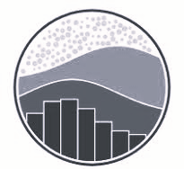

Bhupendra Singh Solanki
As a recent graduate with a robust foundation in data analysis, I am deeply passionate about uncovering actionable insights from complex datasets. My academic and project experiences have equipped me with strong analytical skills, enabling me to tackle real-world challenges effectively. I am eager to leverage these skills to contribute to data-driven decision-making and drive business growth. With a keen interest in utilizing advanced analytics tools and methodologies, I am excited to start my career in data analytics. I am actively seeking an entry-level position where I can apply my knowledge and enthusiasm to make a meaningful impact.
- Download Resume
Contacts


Experience
HR Executive
•Talent Acquisition: Sourcing, screening, and selecting qualified candidates for open positions.
• Employee Relations: Building positive employee relationships, handling grievances, and ensuring a fair work environment.
• Performance Management: Setting performance goals, conducting performance reviews, and implementing performance improvement plans.
• HR Policies: Developing, implementing, and maintaining HR policies and procedures in compliance with labor laws.
• Compensation and Benefits: Managing salary structures, benefits packages, and employee compensation.
Education
Data Analytics
Master of Social Work
74.75 %
Bachelor of Science
74.78 %
12 th
87.86 %
Skills
-
Python
-
MySQL
-
Power BI
-
SQL
-
 Excel
Excel
-
MongoDB
-
BeautifulSoup
-
 Seaborn
-
Selenium
-
Visual Studio
-
Github
-
Numpy
-
 Matplotlib
Matplotlib
- Data Acquisition
- Data Cleaning & Preparation
- Exploratory Data Analysis (EDA)
- Modeling & Analysis
- Data Visualization
- Reporting & Communication
Projects
Job Analytics


Amedment Ansible
Interests
Exploring New Technology
I’m passionate about staying on the cutting edge of technology. Whether it’s the latest mobile applications or emerging tech trends, I love diving into new tools and platforms. My curiosity drives me to continually explore and understand the innovations shaping our digital future.
Recent Interests: AI advancements, mobile app development, data visualization tools.
Hanging Out with Friends
Socializing with friends is a key part of my life. Whether it’s sharing stories, exploring new places, or just enjoying a relaxed evening, I value the connections and experiences I share with others. It's these moments that keep me grounded and motivated.
Driving
Driving, whether it’s a bike or a car, is one of my favorite pastimes. I enjoy the sense of freedom and adventure that comes with hitting the road. It’s a great way to clear my mind and experience the thrill of travel.
Recent Adventures: Road trips across UP Expressways, scenic bike trails.
Maintaining a Healthy Lifestyle
Recently, I’ve developed a strong interest in maintaining a healthy lifestyle. This involves regular exercise and mindfulness. It’s about achieving a complete sense of well-being and staying energized for both work and play.
Current Focus: Fitness routines.
Sci-Fi & Fantasy Movies
When I’m indoors, I indulge in sci-fi and fantasy movies and TV shows. The imaginative worlds and complex narratives captivate me and offer a great escape from reality. I enjoy exploring different storylines and the creative visions of various filmmakers.
Favorites: Classic sci-fi films.
Certifications & Achievements
- Advance SQL Certification - Hacker rank 🔗
- Basics of Web Development - Masai School🔗
- Certification of Employability Skills - Masai School 🔗
- 5 Star Badge - SQL - Hacker Rank🔗
- Group Leader in College - Indore School of Social Work
- Vice-Captain Green House - Holy Faith School
- 2nd Place - College Extempore Competition - Indore School of Social Work
- 2nd Place -Best out of Waste Competition - Indore School of Social Work
- Talent Award - At toppers Meet by CH Edge Makers